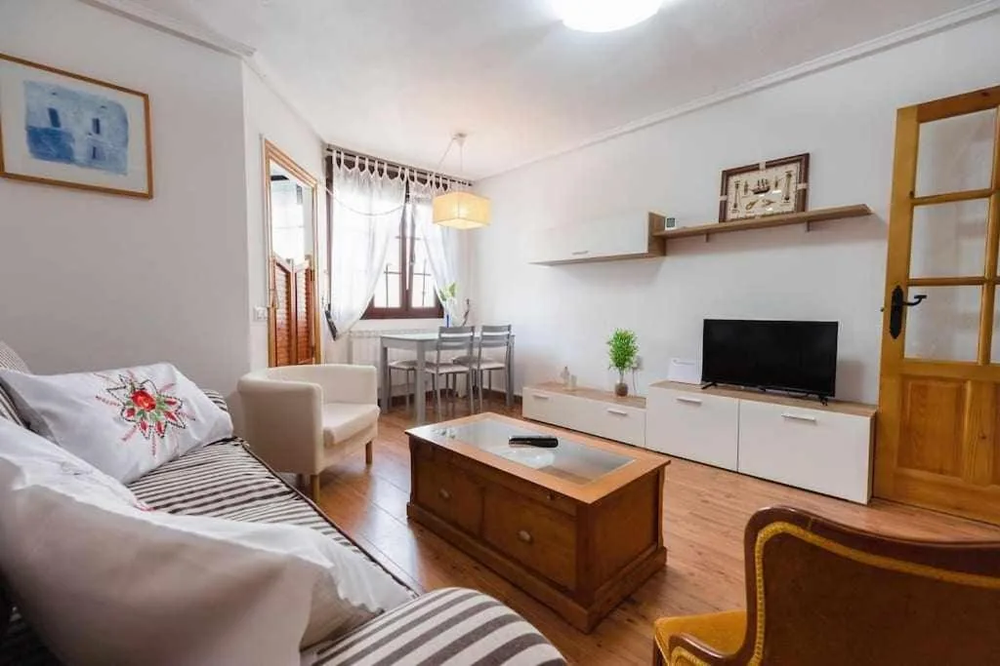
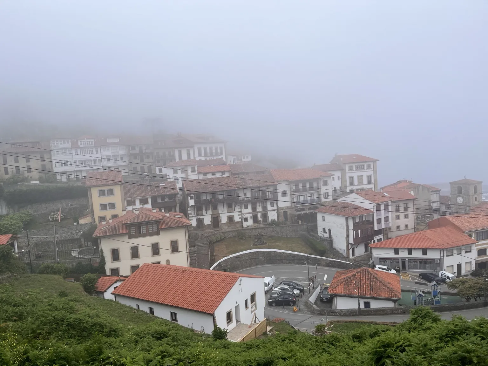

El apartamentín de Lastres
Un apartamento luminoso en Tajamar, con salón cocina, dormitorio doble y sofá cama.
Imagina tus días aquí
Elige las fechas de tu estancia. Hernán te confirmará disponibilidad y precio personalmente.
Explorar la vivienda¿Cuándo te gustaría venir?
Consulta disponibilidad y precio para tus fechas. Tu estancia quedará reservada cuando recibas la confirmación.
¿Qué quieres saber?
Toca una tarjeta para abrirla.
Fotos de la casaDesliza para ver la vivienda+
Dónde dormirásCama doble y sofá cama+
- El dormitorio tiene cama doble y hay un sofá cama en el salón.
Cocina y salónSalón, cocina y comedor+
- Zona de estar, cocina y comedor en un mismo espacio, con sofá cama.
 El bañoBaño con ducha+
El bañoBaño con ducha+
- El apartamento tiene un baño con ducha.

EntornoDescubre Lastres y sus alrededores+
Pasea por las calles de Lastres, el puerto y los miradores. La Griega, Colunga y el Museo del Jurásico quedan en la zona.
Normas y convivenciaAntes de llegar+
- La vivienda está en una segunda planta. No se permiten fiestas. Consulta con Hernán los horarios, las condiciones y tus fechas antes de reservar.
- El aparcamiento cercano depende de la temporada y está sujeto a disponibilidad.
Registro turístico VUT-3273-AS
Pregunta lo que quieras sobre esta vivienda
Soy el asistente de esta vivienda. Te ayudo a conocer sus espacios y a preparar tus días en Lastres.
No compartas datos personales. Tus preguntas se envían a Google Gemini para responder. Privacidad.
Si necesitas una respuesta personal o un dato no confirmado, habla con Hernán por WhatsApp ↗